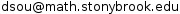

Office: Math tower 3-118
Office Hour: (subject to change)
- Mon 8pm-9pm at Math Tower 3-118
- Tue 5pm-6pm at MLC
- Fri 9am-10am at Math Tower 3-118
Email: 
Popular Resources
MAT131 Calculus I course webpage
Slides for Nonexistence of Wandering Domains for Infinite Renormalizable Hénon Maps (Updated: May 17, 2017)
Preprint: Nonexistence of Wandering Domains for Infinite Renormalizable Hénon Maps arXiv:1705.05036